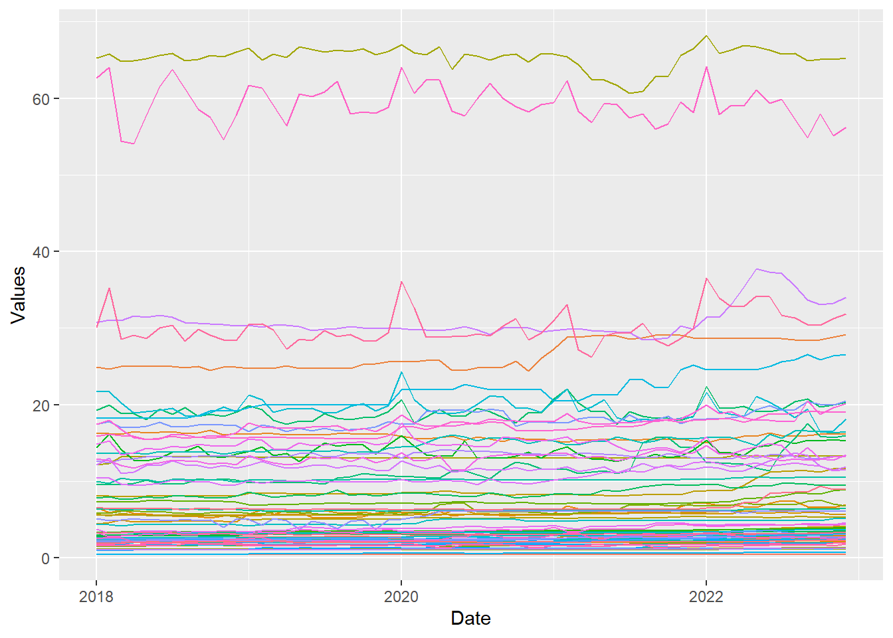
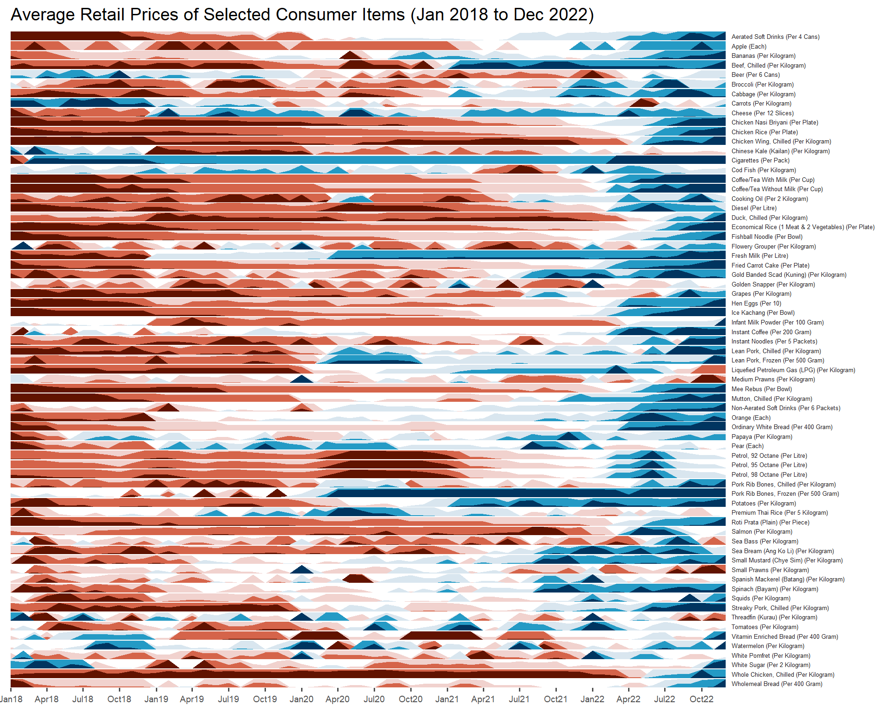
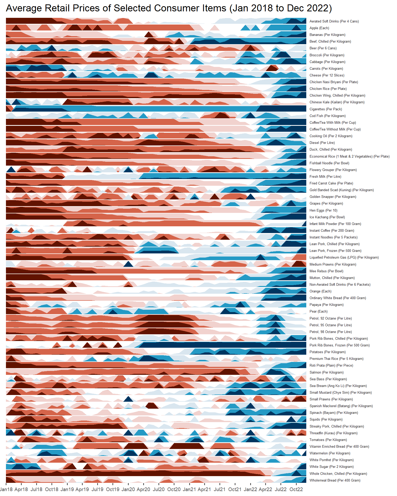

20 Time on the Horizon: ggHoriPlot methods
Hands-On Exercise for Week 7
(First Published: Jul 5, 2023)
20.1 Learning Outcome
We will learn how to create a Horizon Graph.
A horizon graph is an analytical graphical method specially designed for visualising large numbers of time-series. It aims to overcome the issue of visualising highly overlapping time-series as shown in the figure below.

A horizon graph essentially an area chart that has been split into slices and the slices then layered on top of one another with the areas representing the highest (absolute) values on top. Each slice has a greater intensity of colour based on the absolute value it represents.

Before getting started, do visit Getting Started to learn more about the functions of ggHoriPlot package. Next, read geom_horizon() to learn more about the usage of its arguments.
20.2 Getting Started
20.2.1 Install and load the required R libraries
Install and load the the required R packages. The name and function of the new package that will be used for this exercise is as follow:
- ggHoriPlot : allows building horizon plots in ggplot2
20.2.2 Import the Data
The Average Retail Prices Of Selected Consumer Items data will be used.
20.2.3 Plotting the Horizon Graph
The codes below are used to plot the horizon graph.
Show the code
averp %>%
filter(Date >= "2018-01-01") %>%
ggplot() +
geom_horizon(aes(x = Date, y=Values),
origin = "midpoint",
horizonscale = 6)+
facet_grid(`Consumer Items`~.) +
theme_few() +
scale_fill_hcl(palette = 'RdBu') +
theme(panel.spacing.y=unit(0, "lines"), strip.text.y = element_text(
size = 5, angle = 0, hjust = 0),
legend.position = 'none',
axis.text.y = element_blank(),
axis.text.x = element_text(size=7),
axis.title.y = element_blank(),
axis.title.x = element_blank(),
axis.ticks.y = element_blank(),
panel.border = element_blank()
) +
scale_x_date(expand=c(0,0), date_breaks = "3 month", date_labels = "%b%y") +
ggtitle('Average Retail Prices of Selected Consumer Items (Jan 2018 to Dec 2022)')
The red portion of the plot indicates a decline in value while the blue portion denotes an increase in value. The intensity of the red and blue tone signifies the magnitude of decline or increase.
\(**That's\) \(all\) \(folks!**\)